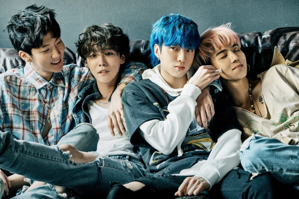

위너(WINNER)는 대한민국 4인조 보이 그룹으로, YG 엔터테인먼트 소속이다.
위너의 그룹명은 이름의 뜻처럼 진정성 있는 음악으로 가요계 '진정한 위너'가
되겠다는 포부의 의미가 담겨 있다. YG 엔터테인먼트에서 빅뱅 이후 8년 만에 선보이는 남성 그룹인 그들은
데뷔 이전 Team A라는 이름으로 2013년 엠넷에서 방송 된 리얼리티 서바이벌 프로그램 《WIN - Who Is Next?》
에서 YG 엔터테인먼트의 또 다른 연습생인 Team B (현재의 iKON)와의 윈 파이널 배틀에서 우승해 '위너'라는 그룹 이름을 얻게 되었다.
